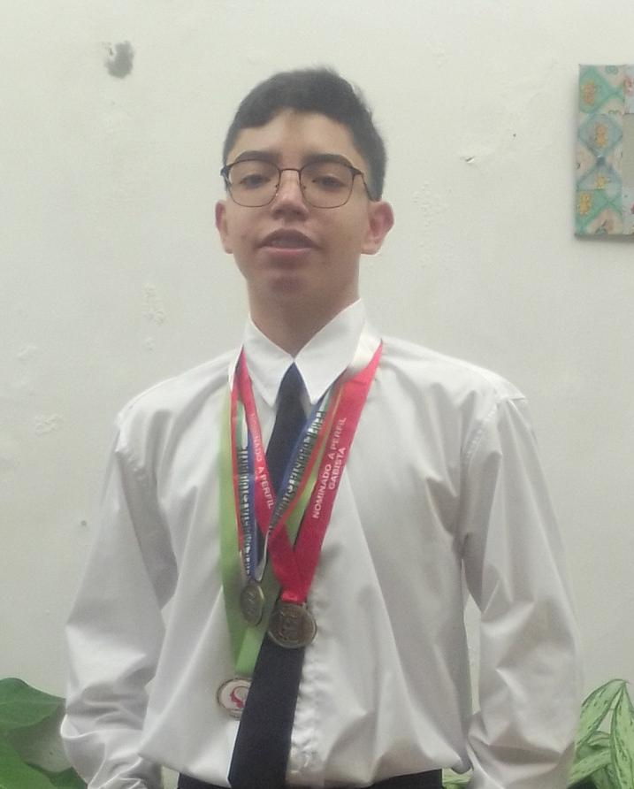

Somos un dueto de estudiantes de la Institución Educativa GABO que buscan promover un pensamiento ambientalista concientizando sobre el reciclaje, también nos consideramos emprendedores que buscan ofrecer este producto o artefacto con el fin de favorecer a la humanidad, y por último también nos consideramos personas habilidosas que buscan aprovechar esto para el avance en contra de los efectos de la contaminación.

Edad: 15 años.
Colegio: GABO.
Grado: 10-5.
Rol: Programador de la página WEB, planteador del software, y socializador.
Historia: Está en el semillero desde el año 2023, participó en su primera Feria de la Ciencia ese mismo año, en 2024 decidió ingresar a la modalidad de programación de su institución educativa cosa que va relacionada con su rol en el proyecto.
Edad: 16 años.
Colegio: GABO.
Grado: 10-2.
Rol: Encargada del diseño de la página WEB, el diseño del artefacto o lo estetico del proyecto, planteadora del manejo de la inteliegncia arificial para el reconocimiento de residuos y socializadora.
Historia: Está en el semillero desde el año 2022, participó en su primera Feria de la Ciencia en octubre de 2023, en 2024 decidió ingresar a la modalidad de DIM de su instiución educativa cosa que va relacionada con su rol del proyecto.